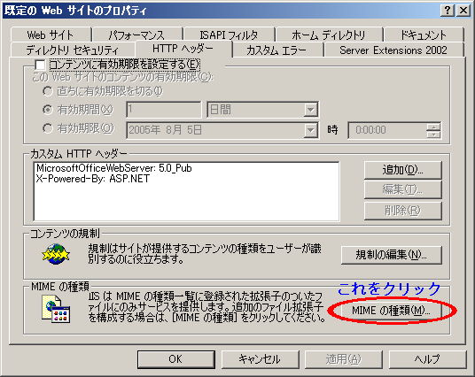
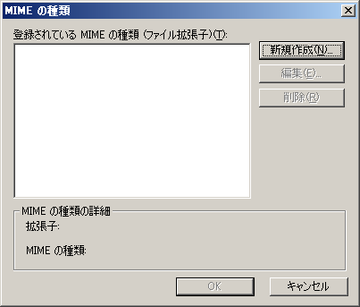
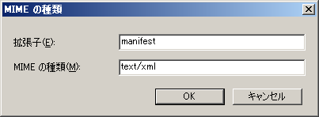

C++/CLI と ClickOnce
クリック・ワンスはアプリケーションの配布について、Web から、ないし、ローカルのディスクから最新の更新状態を提供するマイクロソフトのソリューションです。
このクリック・ワンスによって、アプリケーションのインストールで最新かどうかの確認をした上での差分取得が可能となります。
それで、そのクリック・ワンスなのですが、VisualStudio 2005 Beta2 の段階では、VisualBasic と C# でしか IDE サポートされていません。そのため、良くある解説の通りにできるものだと間違えて一生懸命プロパティから「発行」ページを探しては裏切られたと叫ぶ羽目になります。
では、C++/CLI ではクリック・ワンス機能は使えないのでしょうか？
いいえ。そんなことはありません。
VC++ にクリック・ワンスの IDE がついていないのは、VS2005 のリリースに向けて IDE の開発が間に合わず、切り捨てられてしまっただけなのです。
クリック・ワンスの機能はアプリケーションに埋め込まれた manifest を利用しているので、VC++ で作成された C++/CLI アプリケーションでも利用可能です。
ここでは、IDE サポートがない状態でどうやってクリック・ワンスを C++/CLI で利用できるようにするのか、説明します。
サーバの準備
ClickOnce によってアプリケーションを配布する場合、Web からの自動配布を考えます。
ClickOnce 自体は別に CD からでも、ローカル・ディスクからでもインストールは可能ですが、一番利用したい形態として Web からの配信を考えます。
そのため、配布物はサーバに置く事として、サーバ側の設定を行います。
まず、ネット上に配布用サーバを用意します。サーバは Apache でも IIS でも構いません。HTTP プロトコルでのファイル転送が可能なサーバです。.Net Framework 2.0 をインストールする必要もありません。
.Net Framework 2.0 が必要なのは、転送された配布マニフェストを解釈する側であるクライアントのみです。
次に、配布に使う配布マニフェスト（デプロイメント・マニフェスト）ファイルと、アプリケーション・マニフェストがサーバから正規なMIMEタイプで転送されるよう設定します。
IIS 6の場合
- IIS マネージャで配布を行う Web サイトのプロパティを開きます。
- HTTPヘッダのタブを開きます。
- MIME の種類をクリックします。

- 新規作成で今回作成する配布マニフェストとアプリケーション・マニフェストを追加します。

- 指定したMIMEタイプが設定され、サーバ側に ClickOnce の準備ができます。
- OK ボタンを押して設定終了です。
Apache などの他の Web サーバを使う場合でも、これらの MIME タイプを設定することで、ClickOnce のアプリケーションの配布元になることができます。
証明書の用意
アプリケーション・マニフェストとデプロイメント・マニフェスト
アプリケーション・マニフェストはアプリケーションを構成する情報をXML化したものです。
クリック・ワンスを行うにあたって、もうひとつ作成しなければならないのがデプロイメント・マニフェストです。
こちらが、VB.NET や C# で「発行」した情報を保持します。
マニフェストの作成
上述した２つのマニフェストは .NET Framework SDK に付属のツール MageUI(Mage の方はコマンドライン生成するもの) で作成することが可能です。
ですから、特に VisualStudio 2005 でないとクリック・ワンスが利用できないなんて事はありません。.NET Framework SDK だけでも同様の手順で任意のアプリケーションの配布設定が可能です。
ClickOnce サンプル
以下に、クリック・ワンスの実装サンプルを提供します。
Topに戻る